close all
for i = 1:13
PdataFile = sprintf('Pdata%d.mat', i);
SdataFile = sprintf('data%d.mat', i);
Pdata = load(PdataFile);
Sdata = load(SdataFile);
plotPhantomSimulation(Pdata, Sdata, sprintf('DataSet%d', i));
end
function plotPhantomSimulation(Pdata, Sdata, figPrefix)
PqDes = Pdata.Pdata(:,1:3);
PqdDes = Pdata.Pdata(:,4:6);
PqAct = Pdata.Pdata(:,7:9);
PqdAct = Pdata.Pdata(:,10:12);
Stime = Sdata.tOpt;
Ptime = linspace(0, Stime(end), length(PqAct));
SqDes = Sdata.yOpt(:,1:3);
SqdDes = Sdata.yOpt(:,4:6);
SqAct = Sdata.yOpt(:,7:9);
SqdAct = Sdata.yOpt(:,10:12);
xTarget = Sdata.xTarget;
[SxDes,SyDes,SzDes] = FK(SqDes(:,1),SqDes(:,2),SqDes(:,3));
[SxAct,SyAct,SzAct] = FK(SqAct(:,1),SqAct(:,2),SqAct(:,3));
[PxAct,PyAct,PzAct] = FK(PqAct(:,1),PqAct(:,2),PqAct(:,3));
fig1 = figure; hold on; grid on;
plot(0, 0, 'o', 'LineWidth', 2, 'MarkerSize', 5)
plot(0.05, 0.05, 'o', 'LineWidth', 2, 'MarkerSize', 5)
plot(SyDes, SzDes, 'b', 'LineWidth', 2)
plot(SyAct, SzAct, 'r', 'LineWidth', 2)
plot(PyAct, PzAct, 'g', 'LineWidth', 2)
targetHandles = gobjects(size(xTarget,1),1);
for k = 1:size(xTarget,1)
targetHandles(k) = plot(xTarget(k,2), xTarget(k,3), 'ko', 'MarkerSize', 8, 'MarkerFaceColor', 'k');
end
targetLabels = arrayfun(@(i) sprintf('Target Point %d', i), 1:size(xTarget,1), 'UniformOutput', false);
legendLabels = [{'Start Point', 'End Point', 'Desired Position', 'Simulation Trajectory', 'Phantom Trajectory'}, targetLabels];
legend(legendLabels, 'Location', 'eastoutside')
title('Cartesian Space Position')
xlabel('Y axis')
ylabel('Z axis')
fig2 = figure;
for i = 1:3
subplot(3,1,i); grid on; hold on;
plot(Ptime, PqAct(:,i), 'r-', 'LineWidth', 1.2);
plot(Stime, SqDes(:,i), 'g-', 'LineWidth', 1.2);
plot(Stime, SqAct(:,i), 'b-', 'LineWidth', 1.2);
title(sprintf('Joint %d Position', i));
if i == 3, xlabel('Time'); end
ylabel('Position(rad)');
end
legend('Phantom Actual', 'Simulation Desired', 'Simulation Actual');
fig3 = figure;
for i = 1:3
subplot(3,1,i); grid on; hold on;
plot(Ptime, PqdAct(:,i), 'r-', 'LineWidth', 1.2);
plot(Stime, SqdDes(:,i), 'g-', 'LineWidth', 1.2);
plot(Stime, SqdAct(:,i), 'b-', 'LineWidth', 1.2);
title(sprintf('Joint %d Velocity', i));
if i == 3, xlabel('Time'); end
ylabel('Velocity rad/s');
end
legend('Phantom Actual', 'Simulation Desired', 'Simulation Actual');
end
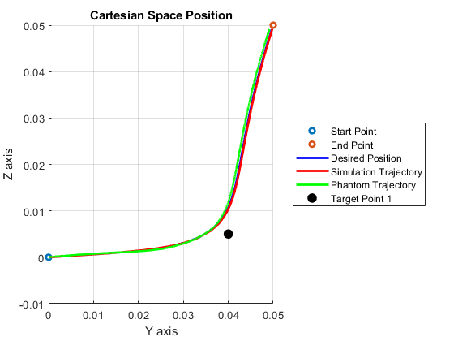 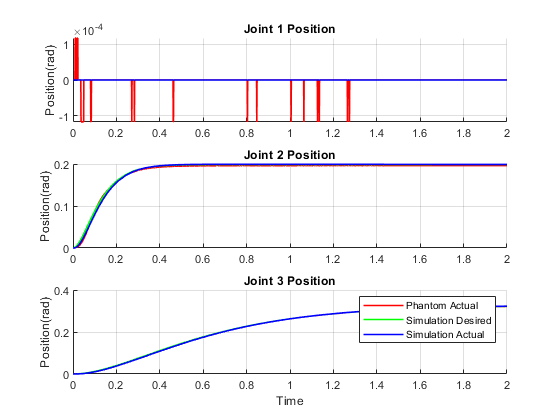 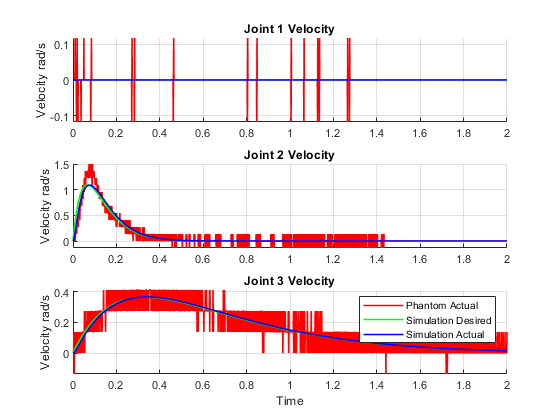 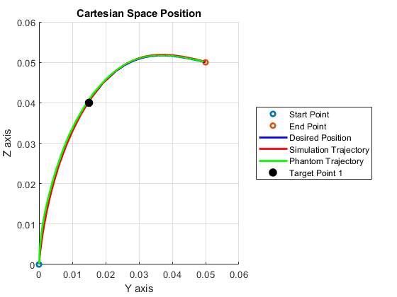 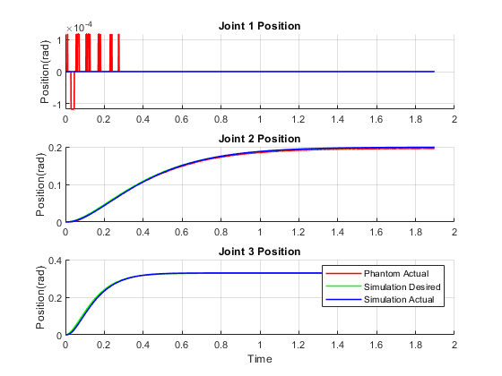 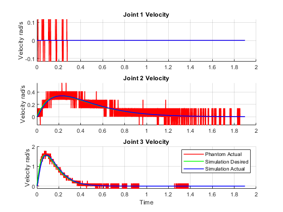 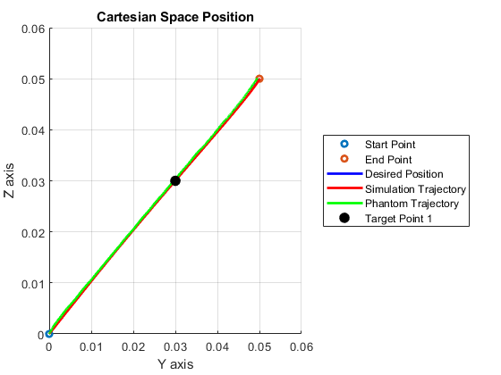 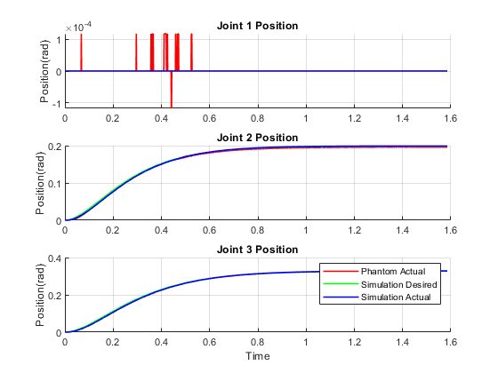 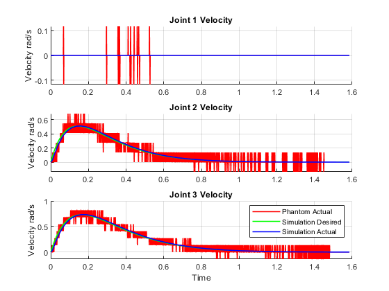 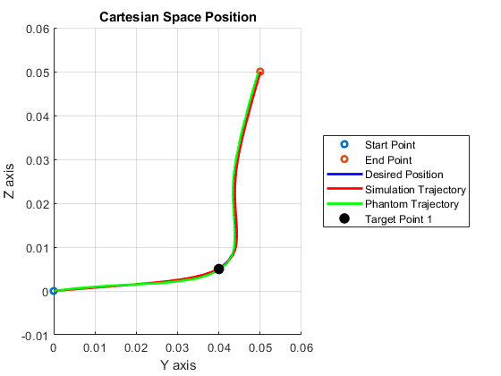 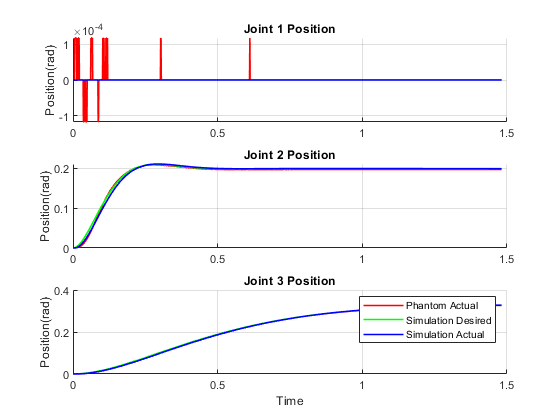 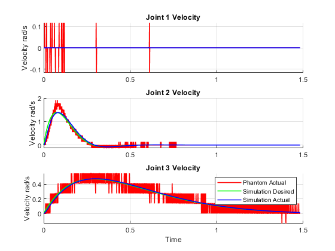 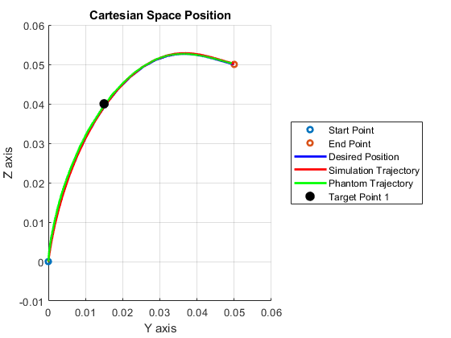 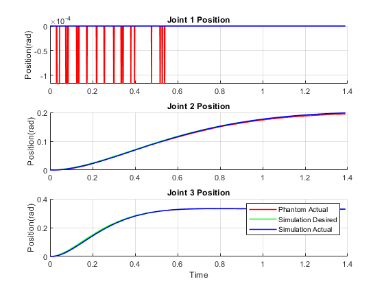 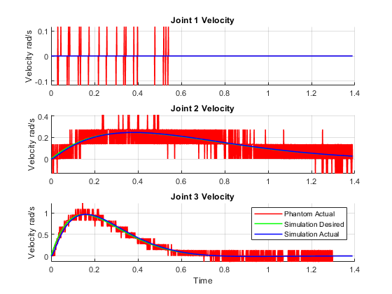 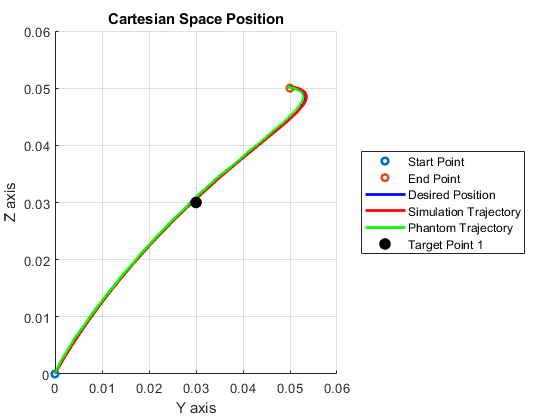 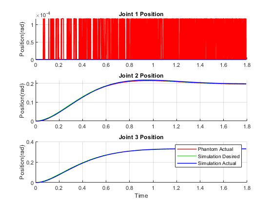 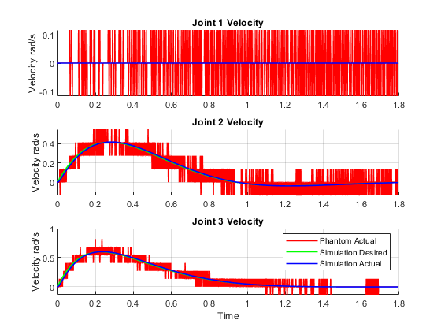 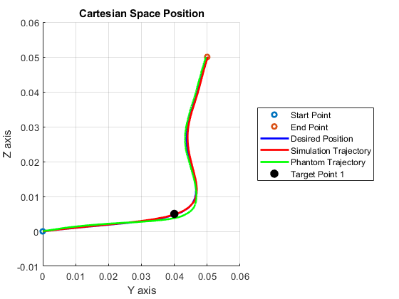 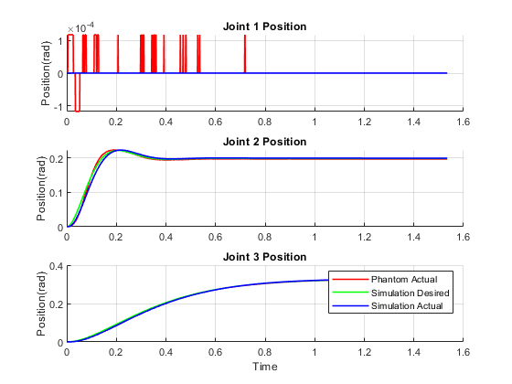 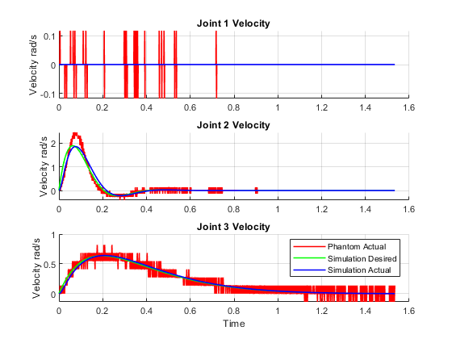 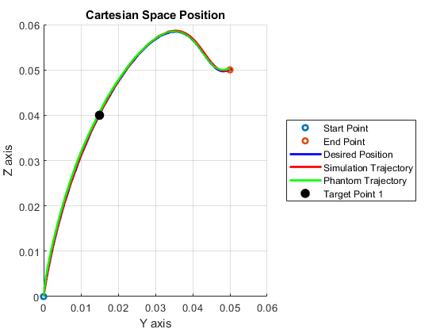 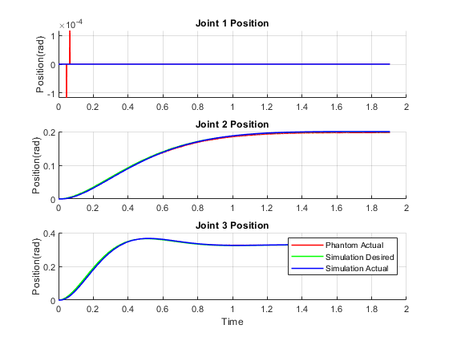 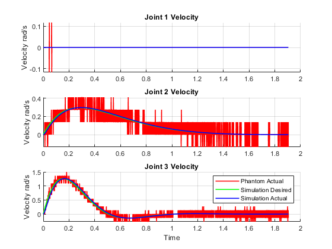 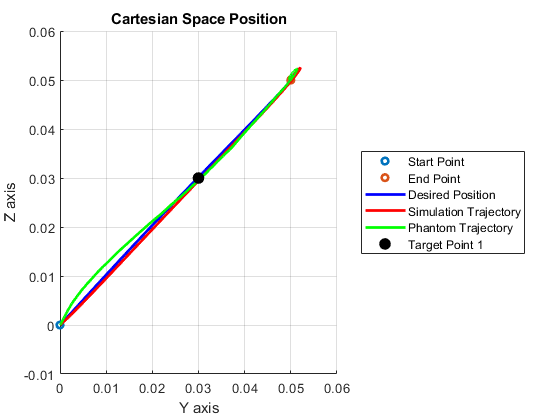 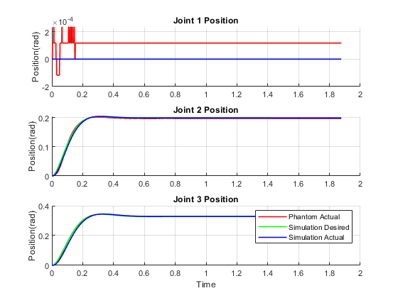 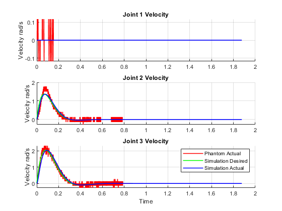 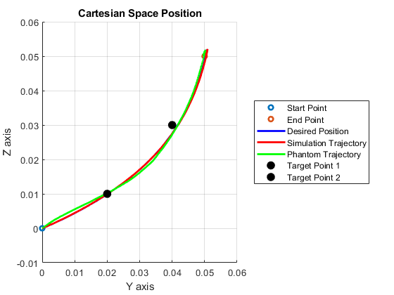 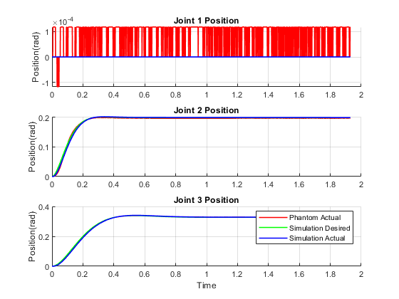 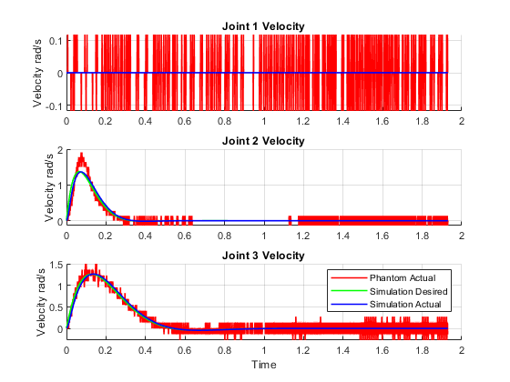 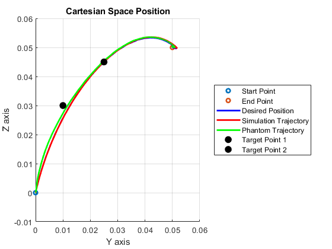 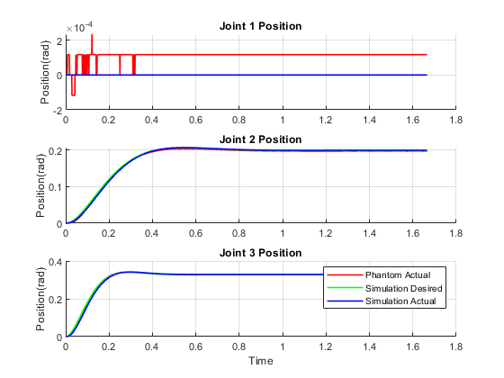 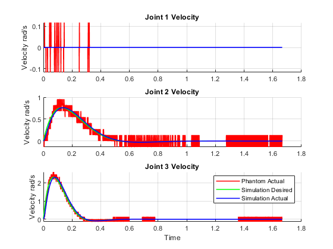 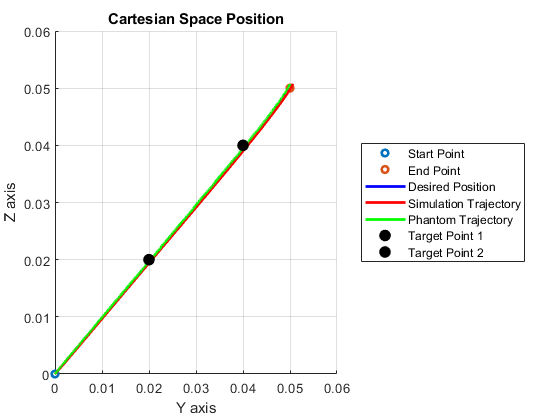 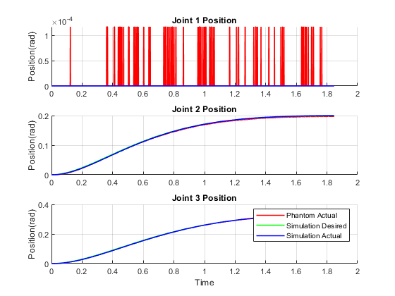 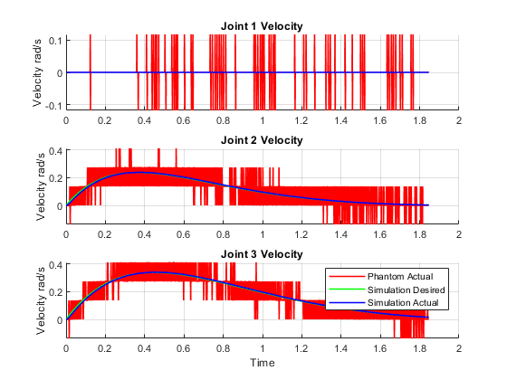 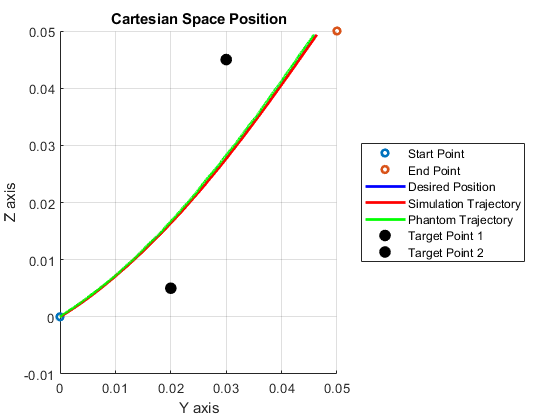 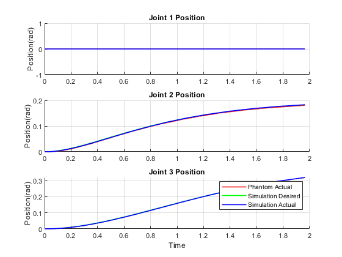 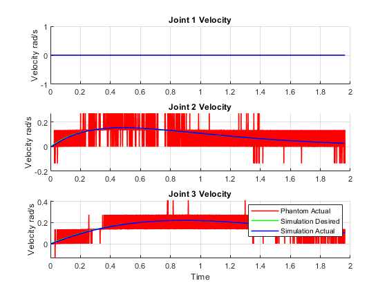